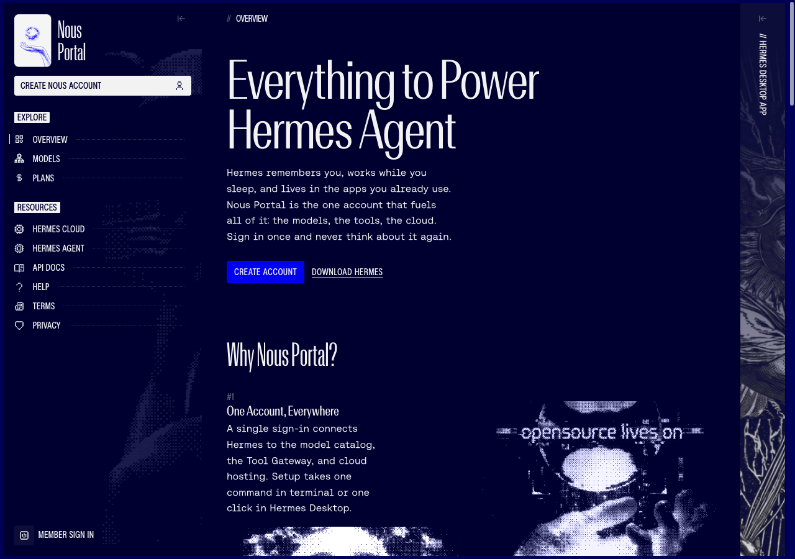
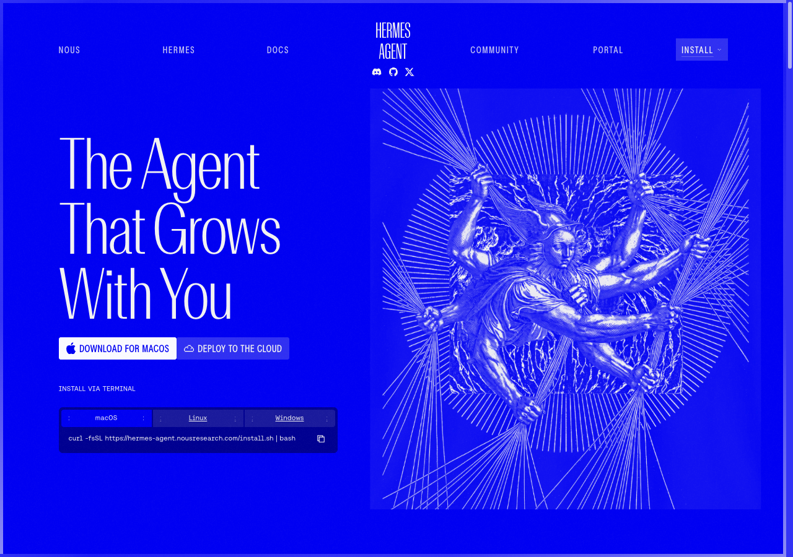
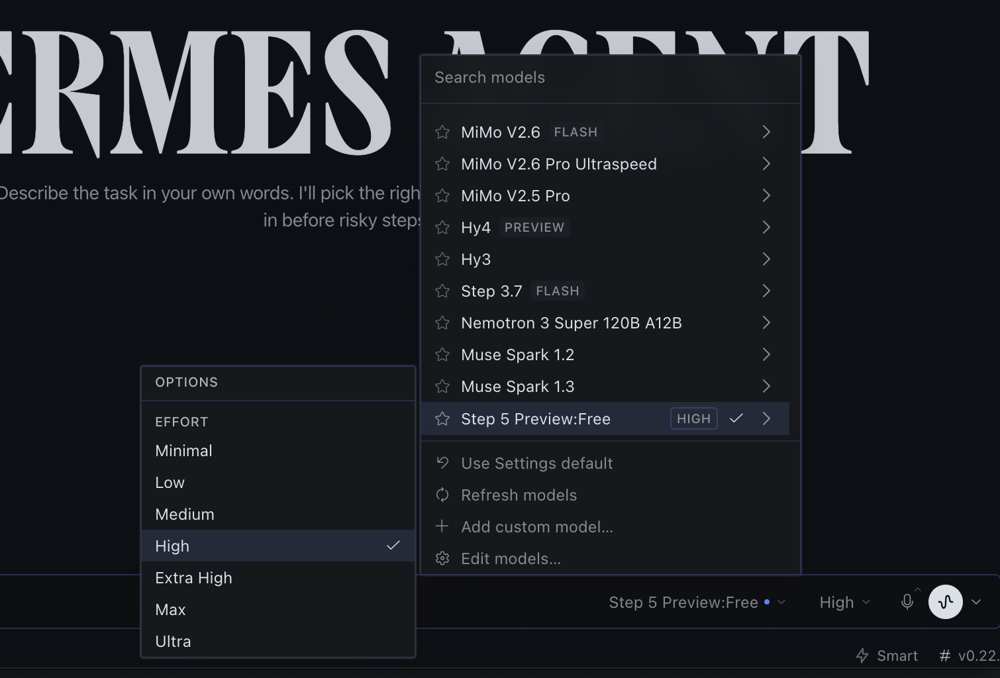

Membangun Game 2D Arcade Interaktif dengan Hermes Agent
Tugas ini dikerjakan secara mandiri tanpa pendampingan tatap muka guru. Anda akan berperan sebagai AI Lead Engineer yang mengarahkan autonomous AI agent (Hermes Desktop) untuk merancang, memprogram, dan menyempurnakan sebuah game web 2D arcade berkualitas tinggi.
Setup Hermes Desktop
Hubungkan akun Google di Nous Portal, unduh Hermes Desktop, lalu pilih model Step 5 Preview:Free.
Aturan Baku AGENTS.md
Salin aturan baku ke folder proyek Anda agar AI wajib mematuhi standar Vanilla JS, LocalStorage, dan SFX.
Rilis di GitHub Pages
Pilih tema game favorit, uji di Chrome, publikasikan ke GitHub Pages, lalu kirim link ke grup WA "AI Coder".
Membuat Akun di Nous Portal (Google Sign-In)
Akun Nous Portal diperlukan untuk mengaktifkan Hermes Agent dan mengakses model Step 5 Preview secara gratis.
Step 5 Preview:Free tidak memerlukan input kartu kredit. Cukup login dan akun Anda siap digunakan.

Mengunduh & Memasang Hermes Desktop
Hermes Desktop adalah aplikasi autonomous AI agent yang bekerja langsung mengelola berkas dan menulis kode di komputer Anda.
🪟 Untuk Pengguna Windows
Buka PowerShell (Run as Administrator) lalu salin dan jalankan perintah instalasi satu baris:
iex (irm https://hermes-agent.nousresearch.com/install.ps1)
🍎 Untuk Pengguna macOS
Klik tombol "Download for macOS" di web, buka file .dmg, lalu seret ikon Hermes ke folder Applications.
curl -fsSL https://hermes-agent.nousresearch.com/install.sh | bash

Membuat & Mengarahkan Folder Proyek Game
Hermes Agent membutuhkan satu folder khusus di komputer Anda agar seluruh file game tersimpan rapi di satu tempat.
A Buat Folder Baru di Laptop
Buka File Explorer (Windows) atau Finder (macOS). Buat sebuah folder baru bernama:
Disarankan diletakkan di dalam folder Documents atau Desktop Anda.
B Arahkan Hermes ke Folder Tersebut
Di jendela Hermes Desktop, Anda dapat memilih folder kerja dengan cara:
- Gunakan menu Open Workspace / Folder pada Hermes Desktop.
- ATAU seret (drag and drop) folder
game-arcade-ailangsung ke jendela Hermes. - ATAU sebutkan path folder lengkap pada prompt perintah pertama Anda.
Memasang Dokumen Aturan AGENTS.md
Buat file bernama AGENTS.md di dalam folder proyek Anda, lalu tempel isi aturan ini. Hermes Agent akan membaca file ini sebelum mulai menulis kode.
index.html di Google Chrome tanpa install server Node.js.
localStorage.setItem() dan localStorage.getItem(). Rekor tidak boleh hilang saat halaman direfresh!
window.AudioContext untuk suara loncat, tangkap poin, dan kalah, lengkap dengan tombol Mute/Unmute.
Memilih Model Step 5 Preview:Free & Effort High
Pastikan Hermes Desktop menggunakan model Step 5 Preview dan tingkat daya pikir (Effort) High untuk menghasilkan kode game yang matang dan minim bug.
Di bilah status kanan bawah jendela Hermes Agent, klik menu pilihan model AI.
Cari dan klik opsi model:
Step 5 Preview:Free
Pada menu EFFORT di sebelah kirinya, atur ke level:
High (atau Extra High).
AGENTS.md.

Memilih Ide & Tema Game 2D Arcade
Siswa bebas memilih salah satu tema game di bawah ini (atau membuat tema kreasi sendiri), asalkan tetap mematuhi batasan teknis di AGENTS.md.
🐍 1. Retro Neon Snake
KlasikKendalikan ular yang memakan item neon. Setiap makan, ular bertambah panjang dan kecepatan meningkat. Menabrak badan sendiri atau dinding = Game Over.
🚀 2. Space Asteroid Dodger
AksiPesawat luar angkasa bergerak ke kiri/kanan untuk menghindari hujan asteroid yang jatuh secara acak. Terdapat item perisai pelindung (Shield Power-up).
🧺 3. Falling Fruit Catcher
KetangkasanGerakkan keranjang untuk menangkap buah/koin yang jatuh dari langit. Jika menangkap bom atau melewatkan 3 buah berharga, permainan berakhir.
🕊️ 4. Cyber Flappy Bird
RefleksTekan Spasi untuk mengepakkan sayap dan menjaga ketinggian karakter agar tidak menabrak pilar pipa rintangan di depan.
💡 Tentukan 1 tema sekarang, lalu gunakan pada prompt di slide berikutnya!
Format Prompt Instruksi ke Hermes Agent
Ketik atau salin teks prompt di bawah ini ke kotak masukan Hermes Agent. Ganti bagian tema sesuai pilihan Anda.
Halo Hermes Agent, saya sedang membangun sebuah game 2D Arcade web dengan tema: [TULIS TEMA ANDA, misal: Retro Snake / Space Dodger / Catching Items]. Bekerjalah di folder proyek ini dan BACA seluruh aturan teknis pada berkas AGENTS.md sebelum mulai coding. Tugas Anda: 1. Bangun antarmuka game modern dan terpusat di berkas index.html. 2. Buat desain CSS bertema arcade yang estetik, rapi, dan responsif di style.css. 3. Tulis seluruh logika game di game.js dengan fitur wajib: - High Score tersimpan permanen menggunakan browser localStorage. - 3 State layar yang jelas: Start Screen, Playing HUD, dan Game Over Screen (dengan tombol Main Lagi / Restart). - Efek suara audio synthesizer native (Web Audio API) untuk aksi lompat/tangkap, skor poin, dan game over, lengkap dengan tombol Mute/Unmute. 4. Gunakan relative path (./style.css dan ./game.js) agar kompatibel saat di-hosting di GitHub Pages. 5. Pastikan game dapat dimainkan dengan kontrol keyboard yang lancar dan bebas error.
index.html, style.css, dan game.js dalam beberapa saat.
Bebas revisi jika ingin menambah fitur!
Menjalankan & Menguji Game di Browser
Buka file index.html di Google Chrome untuk menguji fungsionalitas game secara langsung sebelum diunggah.
🌐 Cara Menjalankan Game
Metode 1 (Paling Mudah):
Buka File Explorer / Finder → masuk ke folder game-arcade-ai → klik ganda pada berkas index.html (otomatis terbuka di browser).
Metode 2 (Browser Chrome):
Buka Google Chrome → tekan Ctrl + O (Windows) atau Cmd + O (Mac) → pilih index.html.
✅ Checklist Uji Mandiri Siswa
Publikasikan Game ke GitHub Pages
Hosting game Anda secara gratis agar dapat diakses publik melalui tautan peramban di laptop maupun smartphone.
Buat Repo Publik
Buka github.com/new. Beri nama repositori: game-arcade-ai dan pastikan memilih opsi Public.
Unggah Berkas Kode
Unggah 4 berkas utama (index.html, style.css, game.js, dan AGENTS.md) langsung via web ("uploading an existing file") atau lewat git terminal.
Aktifkan GitHub Pages
Buka Settings → Pages. Pada Branch, pilih main / / (root), lalu klik Save. Tunggu ±1 menit.
https://[username].github.io/game-arcade-ai/
Kirimkan Tautan ke Grup WhatsApp "AI Coder"
Setelah game berhasil diuji dan online di GitHub Pages, kirimkan bukti tugas ke grup WhatsApp resmi ekskul.
💬 Format Pesan WhatsApp
Halo Kak Pembimbing & teman-teman, berikut hasil tugas mandiri AI Coder saya: Nama: [Tulis Nama Lengkap Siswa] Tema Game: [Tulis Tema] Link Repositori: https://github.com/[username]/game-arcade-ai Link Game Aktif (Pages): https://[username].github.io/game-arcade-ai/ Status: Semua checklist uji sudah lolos.
⭐ Rubrik Penilaian (Total: 100 Poin)
Selamat Berkreasi dan Sukses Membangun Game dengan Hermes Agent!
Tunjukkan karya terbaikmu di grup ekskul dan ajak temanmu memecahkan rekor skor tertinggi!